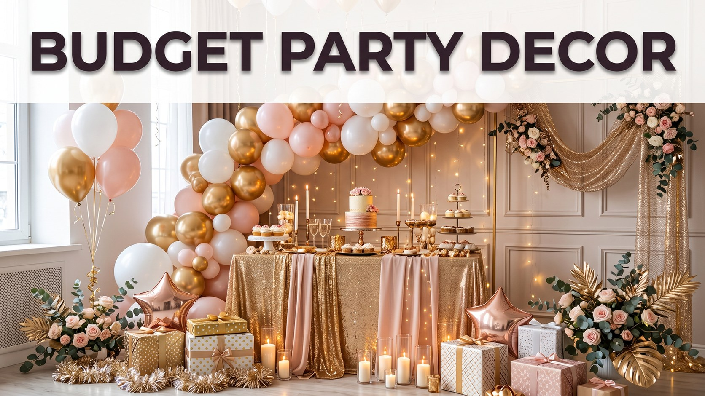

Party Decoration Ideas on a Budget That Look Expensive
Published October 10, 2026 · Updated October 10, 2026 · By EventBuzz Team

Guests read a room in the first ten seconds, and the secret of expensive-looking parties is not expensive objects; it is coordination, lighting and restraint. This guide shares budget decoration ideas that consistently fool the eye: balloons styled the right way, fairy lights used like a designer, table settings that look layered and rich, backdrops built from almost nothing, and colour schemes that make cheap items look chosen.
Every idea uses things you can find in a discount store, borrow, or pull from your own cupboards. Pair these decorations with our step-by-step party planning checklist and your room will look planned weeks in advance, even if it came together yesterday.
Balloons Done Right
Balloons are the budget decorator's superpower, but only when styled with intention. Choose two colours plus one metallic, in mixed sizes, and cluster them in odd numbers: threes and fives at the entrance, along the table, and framing your backdrop. A simple garland made by tying balloons onto a length of string looks professionally arranged and costs almost nothing. Keep balloons at two heights, eye level and above, and avoid scattering single balloons on the floor, which reads as leftover rather than designed. Matte and pearl finishes look pricier than shiny primary colours, and one oversized statement balloon anchors the whole scheme.
Fairy Lights: Instant Atmosphere
Warm white fairy lights forgive every decorating sin. Drape them along shelves, wind them through balloon clusters, drop a string into glass jars or bottles for instant lanterns, and outline the food table so it glows in photographs. Lights lower the need for bright overhead lighting, which alone makes any room feel more premium and every guest look better. Battery strings go where sockets cannot, including table centres and garden fences. If you buy one decoration item this year, buy these; they serve birthdays, dinners, festivals and quiet evenings alike.
Table Styling That Looks Layered
Expensive tables are layered tables. Start with a plain cloth or even a clean sheet in your scheme's darkest colour, add a runner made from wrapping paper, fabric offcuts or a row of leaves, then build height with stacked books, upturned bowls under platters, and jars at different levels. Use real glasses if you can gather enough; matching matters less than avoiding flimsy disposables at the main table. Cloth napkins, simply folded, lift any setting, and a single flower, leaf or balloon weight at each place setting looks deliberate. Candles, real or LED, scattered at varied heights complete the richest cheap trick in decorating: warm pools of light. For an at-home celebration, our birthday party ideas at home show these tables in action.
Backdrop Tricks for Photos
Every party now lives or dies by its photographs, so build one photogenic wall. A plain curtain, sheet or paper streamer wall in your colours becomes a backdrop for almost no money. Add a balloon cluster in one corner, a string of fairy lights, and one bold element: a handwritten sign, large paper flowers, or a name in gold letters. Position it where light is soft and guests naturally gather, near drinks rather than in a forgotten corner, and watch it fill your camera roll all night.
Colour Schemes That Always Look Premium
Colour discipline is the cheapest luxury. These combinations make discount items look curated: white, gold and green; blush, cream and rose gold; navy, white and silver; black, white and one vivid accent; or a fully natural scheme of browns, creams and foliage. Two main colours plus one metallic is the formula behind almost every styled party photograph online. Repeat the scheme in balloons, table items, the cake table and the backdrop, and even paper plates suddenly look like a design decision. Planning a themed celebration? Our baby shower themes apply the same palette thinking to a gentler palette.
Cheap Tips That Read as Expensive
Group decorations instead of spreading them thin; one lush corner beats ten lonely items. Hide the unglamorous: bin bags, boxes and cables disappear in minutes and elevate everything. Print signs and labels in one font for a designed feel. Borrow before buying: cake stands, platters and vases circulate happily among friends. Use scent, a simmering pot of citrus or a single candle, because guests remember how a room felt. Finally, decorate the entrance; the first impression colours every photograph and conversation that follows.
Frequently Asked Questions
How can I decorate a party cheaply but make it look classy?
Limit yourself to two colours plus a metallic, cluster balloons and lights instead of scattering them, style the table in layers, and build one photo backdrop. Coordination, not cost, creates the premium effect.
What is the cheapest decoration with the biggest impact?
Warm fairy lights. They transform lighting, flatter guests and photographs, work indoors and outdoors, and can be reused at every celebration for years.
How many balloons do I need for a party backdrop?
A lush corner cluster usually needs 25–40 balloons in mixed sizes. Tie them onto string in groups of three to five, mix two colours with one metallic, and add one oversized balloon as the anchor.
What colour scheme makes a party look expensive?
White with gold and green, blush with cream and rose gold, or navy with white and silver all photograph as premium. The secret is repeating the same palette everywhere rather than mixing many themes.
Can I decorate the day before the party?
Yes, and you should. Balloons, backdrops, lights and table styling all survive overnight happily, leaving party day free for food and hosting. Only fresh flowers and food-based displays wait until the day.
Conclusion
Expensive-looking is a method, not a budget: choose a palette, cluster with confidence, light warmly, and style one unforgettable corner. Your guests will never guess the total, and your photographs will not tell them. For the full party plan around your decorations, see our party planning checklist and timeline.
Happy decorating — proof that style is a decision, not a price tag.